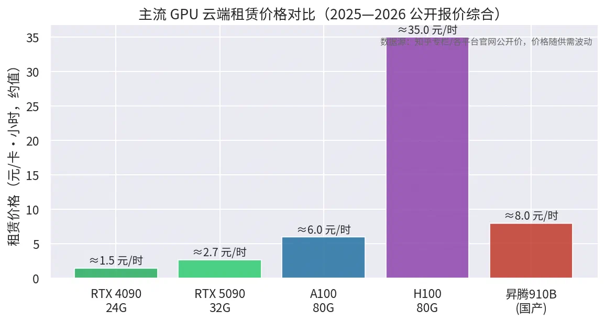

Codex、Agent、Skill 与算力资源
1 Codex 如何辅助开发
发展线：2020 年 GPT-3（175B）展现少样本代码能力 → 2021-08 OpenAI 发布 Codex（GPT-3 在 5400 万 GitHub 仓库代码上微调，支持自然语言→函数级代码生成）→ 2021-06 GitHub Copilot 内测、2022-06 正式发布，成为"AI 结对程序员" [8]。
辅助开发的四个层次：
- 行级补全：IDE 中幽灵文本实时建议，Tab 接受——把"搜索 Stack Overflow 五个答案并评估"压缩成"扫一眼建议" [8]；
- 函数/模块级生成：注释或函数名直接生成完整实现，样板代码（boilerplate）、API 样板、正则、序列化代码收益最大；
- 代码理解：解释遗留代码、生成 docstring、写单测；
- 任务级代理（新一代 Codex CLI / Claude Code）：读仓库 → 规划 → 改代码 → 跑测试 → 提 PR，人退居评审位。
量化收益：GitHub/MIT/Microsoft 的对照实验中，使用 Copilot 的开发者完成 JS HTTP server 任务快 55.8%（95% CI 21–89%），任务完成率 78% vs 70%；新手、年长开发者获益最大 [9][10]。GitHub 2022 年对 2000+ 开发者调研：60–75% 感到更有成就感，73% 认为更易进入心流 [10]。
局限：NYU 2021 年对 24 名学生使用 Codex 的研究发现生成代码"更快但更容易出错或不安全"——速度收益必须与代码审查配套 [8][11]；安全漏洞、许可证污染、过度依赖（技能退化）是公认风险 [11]。
参考来源：[8] Chen et al., Evaluating Large Language Models Trained on Code (Codex paper), https://arxiv.org/abs/2107.03374；[9] Peng et al., The Impact of AI on Developer Productivity: Evidence from GitHub Copilot, https://arxiv.org/pdf/2302.06590；[10] GitHub Blog, Quantifying GitHub Copilot’s impact, 2022-09, https://github.blog/news-insights/research/research-quantifying-github-copilots-impact-on-developer-productivity-and-happiness/；[11] themodernblog, History of AI Coding Tools（NYU 研究转述）
2 Agent 如何规划并执行任务
定义：Agent = LLM（决策脑）+ 规划 + 记忆 + 工具调用 + 环境反馈闭环。任务形式化为 ⟨G, S, O, T, A⟩：目标、状态、观测、转移函数、动作，目标是找到动作序列 π 从初态到目标态 [12]。
经典规划范式（按发展顺序）：
| 范式 | 核心思想 | 代表工作 |
|---|---|---|
| CoT 思维链 | 推理步显式写出再作答 | Wei et al. 2022 |
| ReAct | 推理(Thought)与动作(Action)/观测(Observation)交替循环，直到任务完成；HotPotQA 上幻觉率 14%→6% | Yao et al. 2023 [13] |
| Plan-and-Execute | 先全局分解为子计划再逐步执行 | BabyAGI 类、Wang et al. 2023 |
| Reflexion | 失败轨迹语言化反思，存入记忆指导下一次尝试，不更新权重即实现"强化学习"效果 | Shinn et al. 2023 [14] |
| 树搜索类 | LATS/MCTS 把规划与反思结合搜索更优解 | 2024 系列工作 [12] |
规划能力来源分类（Huang et al. 规划综述 [12]）：① 纯提示式（Zero-shot/Few-shot/CoT）；② 分解式（任务拆分+子目标）；③ 多路径推理（CoT-SC/ToT）；④ 外部规划器辅助；⑤ 反思修正（Self-Refine/CRITIC/LEMA）。反思是关键补丁：LLM 会"卡在思维循环"里，用语言反馈纠错能显著提升容错 [12][14]。
执行循环通用形态：
用户目标 → [规划器: 任务分解] → 循环{ 推理 → 选工具 → 执行 → 观察 → (失败则反思修正) }
→ 结果汇总 → 自我验证 → 输出
参考来源：[12] Huang et al., Understanding the planning of LLM agents: A survey, https://arxiv.org/pdf/2402.02716；[13] Yao et al., ReAct: Synergizing Reasoning and Acting in Language Models, ICLR 2023；[14] Shinn et al., Reflexion: Language Agents with Verbal Reinforcement Learning, NeurIPS 2023
3 Skill 在大模型中的角色
是什么：Skill（技能包）= 以 SKILL.md 为中心的文件夹（YAML 元数据 + Markdown 规程 + 可选脚本/模板/参考资料），把"领域程序性知识"外挂给 Agent，不改模型权重、不发版即可扩展能力。2025-10 Anthropic 将其发布为开放标准，Claude Code、Codex CLI、Gemini CLI 及 Kimi Work 等均采用同款机制 [15][16]。
核心设计——渐进式披露（Progressive Disclosure） [15][16]：
| 层级 | 内容 | 加载时机 | 典型 token 开销 |
|---|---|---|---|
| L1 元数据 | name + description（触发条件） | 启动时全部载入 | 30–100 |
| L2 指令 | SKILL.md 正文（SOP/坑/检查清单） | 意图命中时才读入 | 200–5,000 |
| L3 资源 | 脚本、模板、参考文档 | 执行到才按需读/跑 | 无上限 |
解决了什么：token 消耗与技能数量解耦（装 100 个 skill 也不爆上下文）；能力可复用可分层（个人/项目/团队）；把"提示词工程"升级为"技能工程"——模型智力与业务 SOP 解耦 [16]。
角色定位：Skill 是 Agent 的"程序性记忆 / 岗位 SOP"——工具调用是"原子动作"，Skill 把动作组织成"带适用条件、执行顺序、验收标准的流程"。Voyager（技能库自动积累）证明了技能可跨任务复用 [15]。
安全提醒：Skill 可捆绑任意可执行代码，官方文档明确警示只安装可信来源并审计——供应链风险是新攻击面 [15]。
本组实证：我们的中英对照批处理把踩坑沉淀为 skills/bilingual-tex-translation/SKILL.md（13 条坑）与 skills/lmstudio-hy-mt2-translation/SKILL.md（5 条规则），换会话/换模型后可直接复用——正是 Skill 机制价值的 firsthand 验证。
参考来源：[15] arXiv:2601.10338（Agent Skills 安全与生态综述）+ arXiv:2603.11808（SKILL.md 渐进式披露三层模型）；[16] CSDN/51CTO 渐进式披露设计模式系列；Anthropic, Equipping agents for the real world with Agent Skills, 2025-10
4 现有算力资源介绍与整合

硬件分层 [17][18]：
| 层级 | 代表 | 显存 | 定位 |
|---|---|---|---|
| 消费级 | RTX 4090/5090 | 24/32 GB | 7B–30B 推理与微调，个人开发者标配（租赁量占比 62%） |
| 数据中心级 | A100/H100/H800 | 80 GB | 百亿参数训练与高端推理；H100 引入 Transformer 引擎，FP16 算力 1,979 TFLOPS，约为 A100 的 6.3 倍 [18] |
| 国产算力 | 华为昇腾 910B、寒武纪等 | 64 GB 级 | 自主可控，MindSpore 生态，政务/信创场景 |
价格量级（2025—2026 公开报价，随供需波动）[17]：RTX 4090 ≈ 1.2–2 元/卡时（8 卡月租约 1.2 万）；RTX 5090 ≈ 2.7 元/时；A100 ≈ 6–10 元/时；H100 云端 ≈ 20–35 元/时（国际 H100 从 2024 初 ~5 美元跌到 2025 中 ~2.4 美元/时）。
国内平台格局 [17]：AutoDL（学生/个人首选，价格透明）、趋动云/矩池云（调度灵活）、阿里云 PAI 灵骏/腾讯云/火山引擎（企业级全栈，A100 按需约 8 元/时）、华为云昇腾（国产化）。痛点：高峰期 4090 排队、隐性存储/带宽收费、CUDA 适配运维门槛。
整合策略（也是本组实践的路线）：
- 分层使用：重训练/大模型上云端租卡（按小时、竞价实例）；轻量推理（1–2B 翻译模型）用本地 RTX 4060 8GB 笔记本 + LMStudio；
- 服务化复用：任何算力都封装为 HTTP API（LMStudio、vLLM、MinerU API），上层 Agent 只认接口不认硬件——本机 192.168.77.1:1234 的 hy-mt2 与局域网内任何设备共享；
- 异构混布：Windows 本机（LMStudio/MinerU WebUI）+ Docker（MinerU API）+ 云端弹性补峰，通过统一 API 网关路由。
参考来源：[17] 知乎专栏《国内算力租赁平台全面对比分析报告（2025年6月）》及《国内主流算力租赁平台横评》、各平台官网公开价；[18] cloudgputracker H100 vs A100 规格与云端价格对比